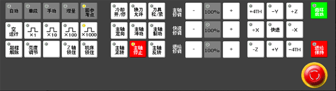
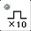
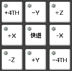

“循环启动”按键又执行下一程序段，执行完了后又再次停止。
| HNC-21M操作面板 |
机床操作面板位于窗口的右下侧，如下图所示。主要用于控制机床的运动和选择机床运行状态，
由模式选择旋钮、数控程序运行控制开关等多个部分组成，每一部分的详细说明如下。

方式选择
进入自动加工模式。
 按一下"循环启动"按键运行一程序段，机床运动轴减速停止，刀具、主轴电机停止运行；再按一下
按一下"循环启动"按键运行一程序段，机床运动轴减速停止，刀具、主轴电机停止运行；再按一下
“循环启动”按键又执行下一程序段，执行完了后又再次停止。
 手动方式，手动连续移动台面或者刀具。
手动方式，手动连续移动台面或者刀具。
 增量进给。
增量进给。
 回参考点
。
回参考点
。
主轴控制
在手动方式下，当主轴制动无效时，指示灯灭按一下“主轴定向按键”，主轴立即执行主轴定
向功能。定向完成后，按键内指示灯亮，主轴准确停止在某一固定位置.
在手动方式下，当主轴制动无效时，指示灯灭按一下
“主轴冲动按键”，指示灯亮。主电机
以机床参数设定的转速和时间转动一定的角度。
在手动方式下，主轴处于停止状态时，按一下“主轴制动”
按键，指示灯亮主电机被锁定在
当前位置。
按一下“主轴正转”按键，指示灯亮主电机以机床参数设定的转速正转。
按一下“主轴停止”按键，指示灯亮主电机停止运转。
按一下“主轴反转”按键，指示灯亮主电机以机床参数设定的转速反转。
增量倍率


锁住按钮
禁止进刀；在手动运行开始前按一下“Z
轴锁住”按键，指示灯亮，再手动移动Z 轴，Z 轴坐
标位置信息变化，但Z 轴不运动。
禁止机床所有运动
在自动运行开始前，按一下“机床锁住”按键（指示灯亮），再按“循环启动”按键系统继续执行程序，显示屏上的坐标轴位置信息变化但不输出伺服轴的移动指令，所以机床停止不动，这个功能用于校验程序。
刀具松紧
在手动方式下，通过按压“允许换刀”按键，使得允许刀具
松/紧操作有效(指示灯亮)
按一下“刀具松/紧”
按键，松开刀具默认值为夹紧。再按一下又为夹紧刀具，如此循环.
数控程序运行控制开关
程序运行开始；模式选择旋钮在“自动”、“单段”和“MDI”位置时按下有效，其余时间按下无效。
空运行
按下此键,
各轴以固定的速度运动。
超程解除
在伺服轴行程的两端各有一个极限开关，作用是防止伺服机构碰撞而损坏，每当伺服机构碰
(1)
松开急停按钮置工作方式为手动或手摇方式
冷却启停
在手动方式下，按一下“冷却开/停”冷却液开，默认值为冷却液关，再按一下又为冷却液关，
主轴正转及反转的速度可通过主轴修调调节，按压主轴修调右侧的100%
按键，指示灯亮。主轴修调倍率被置为100% ，按一下“+” 按键，主轴修调倍率递增5%，， 按 一下“-
”按键，主轴修调倍率递减5%，机械齿轮换档时，主轴速度不能修调。

程序运行停止，在数控程序运行中，按下此按钮停止程序运行。
到行程极限开关时，就会出现超程。当某轴出现超程，（“超程解除”按键内指示灯亮时）
系统视其状况为紧急停止，要退出超程状态时必须：
(2)
一直按压着超程解除按键控制器会暂时忽略超程的紧急情况
(3) 在手动(手摇)方式下使该轴向相反方向退出超程状态
(4)
松开超程解除按键
若显示屏上运行状态栏运行正常取代了出错表示恢复正常可以继续操作
如此循环.
急停 机床运行过程中，在危险或紧急情况下按下急停按钮，
CNC 即进入急停状态。伺服进给及主轴运转立即停止工作(控制
柜内的进给驱动电源被切断)。松开急停按钮，左旋此按钮，自动跳起，CNC 进入复位状态。
机床运行过程中，在危险或紧急情况下按下急停按钮，
CNC 即进入急停状态。伺服进给及主轴运转立即停止工作(控制
柜内的进给驱动电源被切断)。松开急停按钮，左旋此按钮，自动跳起，CNC 进入复位状态。